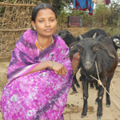
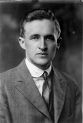

I have written these things with the intention of telling you about the organization that is working on truly solving these problems, Heifer International. This organization doesn't give people food, clothing, medical aid, or other short term helps that enforce dependence and prevent stable growth, but instead gives them livestock animals. This is the best way because it gives families an immediate source of food and money, a business to run, and the promise of future wealth in the form of animal offspring. These are understandable and manageable sources of income for an impoverished family, and require fairly little training or equipment.  Since training and equipment are occasionally obstacles, the organization also offers training in animal husbandry, and can offer zero interest loans towards other animal necessities. Since the animals provided are themselves sources of income, these loans are realistic and can be paid back in a reasonable amount of time. All these things combined make Heifer International both realistic and compassionate. To use the saying of Heifer International's founder, Dan West, we must not give a cup, but give a cow. 
The organization is accredited as honest and efficient by the better business bureau and other watchdog organizations. Since there are many charities that waste or even steal the contributions trusted to them, it is essential that a group be checked and double checked before it is trusted with such a grave responsibility. There is no room for unnecessary waste, and especially corruption, when the need around the world is so enormous.
Hopefully you have come to better understand the worldwide problems, and now have a way to help fight them. I encourage you to visit the Heifer International website and investigate what I've said, and then to take action by donating animals to poor families. These dire problems can someday be truly solved, and the kind of poverty and suffering we now see can be erased.